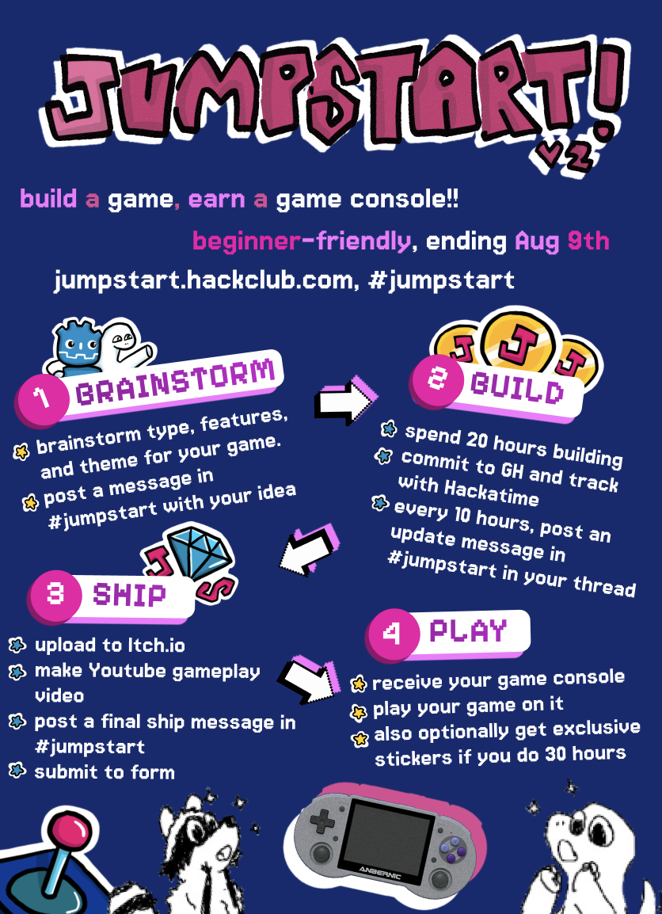

Overview Poster
1. Plan your Game
Choose what kind of game you want to make (puzzle, platformer, fighting, simulation, racing...) Think about the features you want to add, the theme you want your game to have, and what the actual gameplay will be like.
Pick a game engine to use. If this is your first time, use Godot. If you have prior game dev experience, you can use Unity.
If you need a start, go to Jumpstart V1's website and there is a comprehensive beginner-friendly guide to get you started on making a platformer in Godot.
Once you have an idea for your game, post a message in the #jumpstart channel with a one-liner for your game, a couple features you want to add, the game engine you will be using, if you've done game dev before, and any other ideas about your game that you have.
If you are using the Godot platformer starter guide, you can post "i'm using the Godot platformer starter guide to start my game" for your game idea, but still make sure to include a GAME IDEA title. If you participated in Jumpstart V1, you can post your current game state in format of the 10-hour update message below.
Example Message (must be in the format shown)
GAME IDEA
name of game: signal lost
type of game: platformer
one-liner: a space platformer where you are an astronaut trying to find rocket parts.
features:
- gravity changing
- dangerous plants
- oxygen bubbles
gameplay: there will be 5 levels and the player goes through the maze-like map, getting oxygen to stay alive, avoiding plants, and changing gravity.
game engine: Godot
experience: first time!
other notes: something like Celeste, pixel art style, fast-paced
If you need ideas on what games to make, check out the games below, all made by Hack Clubbers:

Euclidia
An adventure platformer where you collect cards, use rays to get around, and solve puzzles.
Made by Rohan V-F in 20 hours for Jumpstart V1, you can play it at here!

Brickland Adventures
An adorable pink elephant where you battle mushrooms and find your way through a maze of bricks to meet your duck friend!
Made by Sofia G in 12 hours for Jumpstart V1, you can play it at here!

2. Build your Game
Spend 20 hours building a game! Track your time using Hackatime and make regular commits to a Github repository for your game (Godot Github setup and Unity Github setup). You can install Godot hackatime here and Unity hackatime here.
If you need a start, go to Jumpstart V1's website and there are many beginner-friendly guides to get you started on making a platformer in Godot.
Once you hit 10 hours, you must post a message in the thread of your original game idea post in #jumpstart and send to channel. It must have your Github repository linked, a screen-recording of your gameplay, a list of what features you added, what the most challenging thing was, and what you are planning on adding next.
Optionally, you can spend 10 more hours (30 hours total) to earn an epic, exclusive Jumpstart stickersheet along with your console!
Example Message (must be in the format shown)
10-HOUR UPDATE
githubrepo: https://github.com/themagicfrog/signal-lost
itch.io link: (if available)
features added:
- player movement
- gravity change mechanic
- basic enemy (plant)
- basic oxygen system
most challenging: probably getting the gravity change to work with WASD and things
next up: add more levels, add aliens??, make some cool effects
*ATTACH SHORT SCREEN RECORDING OF YOUR GAMEPLAY*
If you spend more than 20 hours, make sure to post an update message in the thread of your original game idea post in #jumpstart and send to channel every 10 hours of work. You will need these update messages to be approved to earn the console and optional stickersheet when you submit.
3. Ship Your Project
Upload your game to Itch.io, a website where people share and play video games. Make an account, export your game, and publish it to the world. Also, you'll need to record a gameplay video of you playing through your entire game and publish it on Youtube.
Share your project in #jumpstart with an Itch link, gameplay video, total hours spent, a description, list of features, and your game-making process.
Example Message (must be in the format shown)
SHIP POST
githubrepo: https://github.com/themagicfrog/signal-lost
itch.io: https://themagicfrog.itch.io/signal-lost
gameplay video: https://www.youtube.com/watch?v=uEuKmrQteOQ
hours spent: 106!!
description: a space platformer where you are an astronaut trying to find rocket parts to go home.
features:
- 5 levels
- gravity changing
- oxygen system
- plant enemies
- rocket parts to collect
- aliens to talk to
- pixel art i drew
- jetpack and snow particles
process: first time making a game using Godot, so i learned a lot.... etc..
4. Submit to Form
Submit your game to the form! You must have the following: links to the messages in #jumpstart you sent (original game idea, 10-hour check-in, and final ship post (should all be in the same thread, and sent to channel)). You must have an Itch.io link, your Github repo link, Youtube gameplay video, Hackatime proof for your time spent, and a written descriptions.
5. Get your Console! CONGRATS!
If you project is approved, you will be shipped a gaming console and maybe the Jumpstart stickersheet too! The gaming console is a Anbernic RG353P. It is very high-quality, runs on Android 11 and Linux, has Wifi and Bluetooth, and has a good amount of RAM and storage. The best part is that you will be able to upload your game on the console and play it.